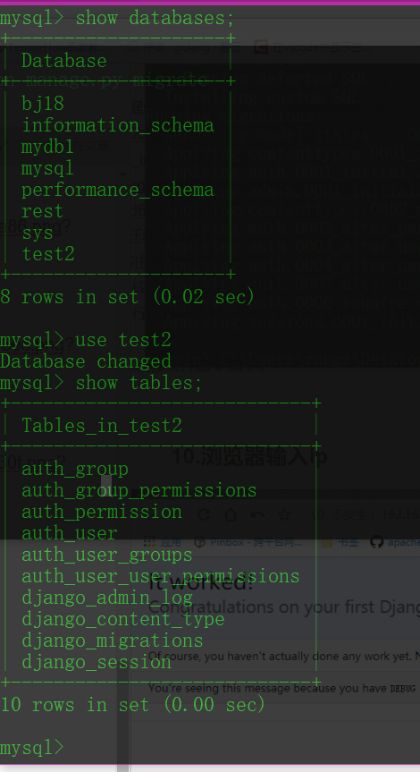
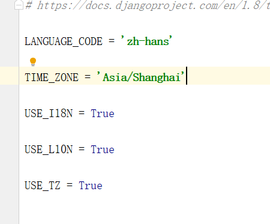
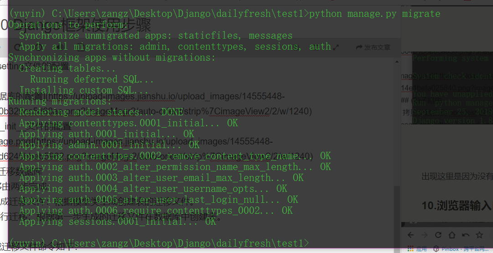
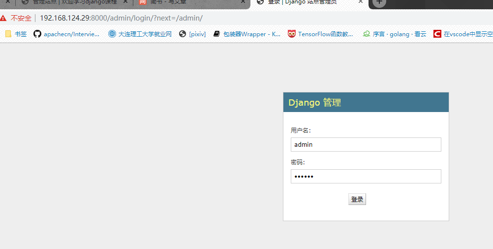

011 Django框架使用步骤
1.创建项目¶
django-admin startproject 项目名称 例： django-admin startproject test1
2. 创建应用¶
python manage.py startapp booktest
3.安装应用]¶
4.建立模板目录 templates¶
5. 添加模板目录的路径¶
6. 数据库的修改(使用mysql数据库)¶
(1)创建一个新的数据库¶
 (2) setting文件的配置
(2) setting文件的配置
(3)__init__文件的配置 (4) 迁移数据库 迁移由两步完成: 1.生成迁移文件：根据模型类生成创建表的迁移文件。 2.执行迁移：根据第一步生成的迁移文件在数据库中创建表。
生成迁移文件命令如下：
python manage.py makemigrations
执行迁移命令如下：(一开始没有模型类,只要迁移就行了不用创建迁移文件)
python manage.py migrate

7.语言及地区的修改¶

8. urls 路由的设置¶
(1)父路由¶
(2)子路由¶
01 拷贝父路由到 booktest 这个应用文件夹 02 路由的配置 删除不用的东西干干净净的
9. 绑定ip跟端口开启服务器¶
出现这里是因为没有迁移数据库(到前面的地方检查) 由于没有创建模型类,因此只需要迁移就行 
10.浏览器输入ip¶
啰里啰嗦的使用过程
11 模型类的创建¶
富文本编辑器的使用参考html文档¶
富文本编辑器 借助富文本编辑器，网站的编辑人员能够像使用offfice一样编写出漂亮的、所见即所得的页面。此处以tinymce为例，其它富文本编辑器的使用也是类似的。
在虚拟环境中安装包。
pip install django-tinymce==2.6.0
安装完成后，可以使用在Admin管理中，也可以自定义表单使用。
示例 1）在test6/settings.py中为INSTALLED_APPS添加编辑器应用。
INSTALLED_APPS = (
...
'tinymce',
)
2）在test6/settings.py中添加编辑器配置。
TINYMCE_DEFAULT_CONFIG = {
'theme': 'advanced',
'width': 600,
'height': 400,
}
3）在test6/urls.py中配置编辑器url。
urlpatterns = [
...
url(r'^tinymce/', include('tinymce.urls')),
]
接下来介绍在Admin页面、自定义表单页面的使用方式。
在Admin中使用¶
1）在booktest/models.py中，定义模型的属性为HTMLField()类型。
数据库迁移¶
后台注册¶
后台管理员的创建¶
1.创建管理员
创建管理员的命令如下，按提示输入用户名、邮箱、密码。
python manage.py createsuperuser

- 登录后台管理 
- 进入goods tests 进行添加(一个商品状态,一个商品详情)
- 使得显示更加人性化